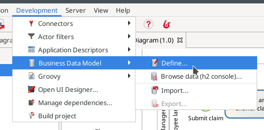

Define business data model (BDM)
The Bonita platform provides a means to define, manipulate and store your business data. This data management service will create Java objects to allow data manipulation, database tables for storage, and all operations required to get the data from your process into the database and vice versa.
Data management involves several steps:
-
Create the Business Data Model (BDM). This is the definition of the types of data you will deal with in your processes and applications.
-
Declare business variables in the process definition. Variables are used to make the link between your process definition and the data it needs to create, read, update, and delete. Data can be created as part of process execution (on start or on a task) but processes can also read and update data created by other processes and of course can choose to delete data.
-
Define process and task contracts. Contracts define the information process accepts from the user submitting the form.
In this chapter we will focus on the creation of the Business Data Model (BDM) only. Declaration of business variables is part of the next chapter.
In Bonita Studio, create a BDM:
-
Go to menu

-
Click on Add button
-
Type the object name Claim (objects name must always start with an uppercase letter)
-
In the Attributes tab, click on Add button
-
Add 3 attributes (attributes name must always start with a lowercase letter):
-
description of type STRING and mandatory (check the checkbox in the mandatory column)
-
answer of type STRING, optional
-
satisfactionLevel of type INTEGER, optional

-
Click on Finish button
-
info Mandatory on a object attribute means that the object cannot be created with an empty value. If the mandatory option is not checked, it means that an object can be created with an empty value, for the attribute "not mandatory" (i.e. optional). In our example, the answer attribute is optional because at process start it will be empty. Later in the process execution, an employee will provide an answer and doing so will be mandatory (but this will not be enforced by BDM definition).
-
warning When you edit the BDM in Bonita Studio, it is always recommended to reset the database after doing any modification on the model. Check the checkbox "Reset BDM database," available in the pop-up window display when you validate your modifications.
-
info When you click on the "Finish" button three different operations are performed:
-
BDM definition is saved in your project (under Business Data Model category)
-
Java classes are generated, compiled, packaged and the resulting jar file is added to your project (under Java dependencies category)
-
Tables are created in the Bonita Studio embedded test database
-
-
info Bonita Studio uses h2 to provide the database for testing. (You can use other types of databases such as Oracle, PostgreSQL, MySQL and SQL Server for production). Bonita Studio provides two database schemas: one for the Bonita Engine and one dedicated to BDM. You can view the tables created in the h2 BDM database by clicking in the Bonita Studio menu on . In the h2 console (a web interface) you can see that a table named "CLAIM" was created. You can run an SQL query such as
SELECT * FROM CLAIMwhich should return an empty result as there is no data yet. -
Now you have a fully functional business data management model. You are ready to move to the next chapter and start populating the database with data collected by the process.
-